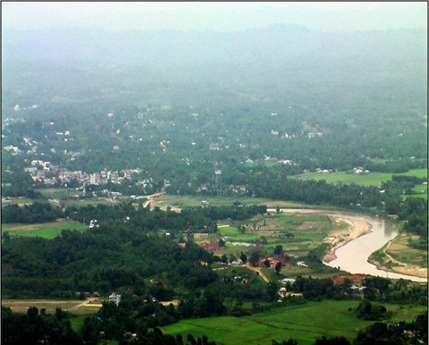
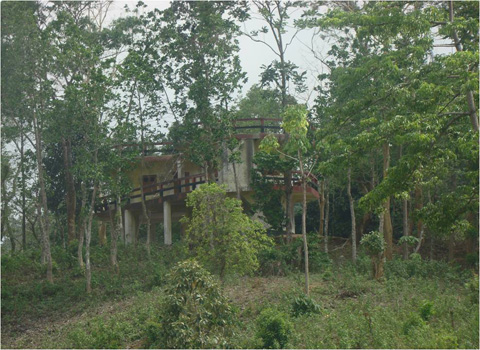

বৈচিত্র্যময় খাগড়াছড়ি
খাগড়াছড়ি শহর থেকে ৮কিঃ মিঃ পশ্চিমে আলুটিলা পাহাড় চূড়ায় আলুটিলা পর্যটন কেন্দ্র।

আলুটিলা পর্যটন কেন্দ্র থেকে দৃশ্যমান চেঙ্গী নদী ও খাগড়াছড়ি শহর
পর্যটন কেন্দ্রটি খাগড়াছড়ি-চট্টগ্রাম মহাসড়কের পার্শ্বে অবস্থিত হওয়ায় বাস, ট্যাক্সিযোগ যাতায়াত করা যায়।
ঐশ্বর্যময় সৌন্দর্য্যরে অহঙ্কার খাগড়াছড়ি শহরের প্রবেশ পথেই চোখে পড়বে আলুটিলা পর্যটন কেন্দ্র। আলুটিলা বাংলাদেশের একটি অন্যতম ব্যতিক্রমধর্মী পর্যটন স্পট। আর তাই এর সৌন্দর্য্যে মুগ্ধ হয়ে খাগড়াছড়ির সাবেক জেলা প্রশাসক একটি কবিতা লিখেছিলেন যা অনেকটা এ রকম-“ক্লান্ত পথিক ক্ষণেক বসিও আলুটিলার বটমূলে, নয়ন ভরিয়া দেখিও মোরে চেঙ্গী নদীর কোলে।”

আলুটিলায় অবস্থিত রেস্ট হাউজ
এ পর্যটন কেন্দ্রে পার্বত্য জেলা পরিষদ ও পার্বত্য চট্টগ্রাম উন্নয়ন বোর্ডের অর্থায়নে পর্যবেক্ষণ টাওয়ার, বিশ্রাম কক্ষ ও বসার সু-ব্যবস্থাসহ গুহায় যাওয়ার পথে সিঁড়ি করা হয়েছে। এ টিলার চূড়ায় দাঁড়ালে শহরের ছোট-খাট ভবন, বৃক্ষ শোভিত পাহাড়, চেঙ্গী নদীর প্রবাহ ও আকাশের আল্পনা মনকে অপার্থিব মুগ্ধতায় ভরে তোলে। প্রাকৃতিক নৈসর্গের এ স্থানটিকে আরো আকর্ষণীয় করে তোলার লক্ষ্যে সরকার এখানে ইকোপার্ক স্থাপনের কার্যক্রম গ্রহণ করেছে। পর্যবেক্ষণ টাওয়ার থেকে খাগড়াছড়িকে দেখে দার্জিলিংয়ের সাথে তুলনা করতে পারেন।
প্রতিদিন শত শত পর্যটক এখানে বনভোজন করতে কিংবা অবসরে বেড়াতে আসেন। পর্যটকদের নিরাপত্তার জন্য এ স্থানে একটি অস্থায়ী পুলিশ ক্যাম্পও আছে।